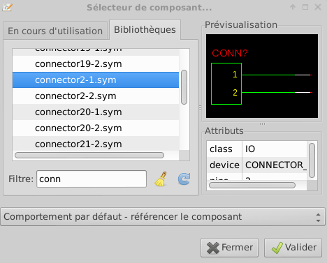
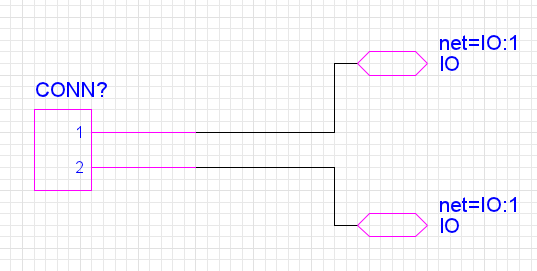
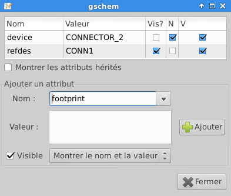
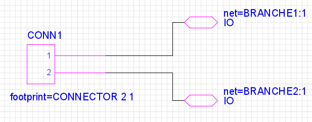
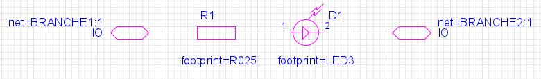
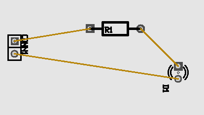
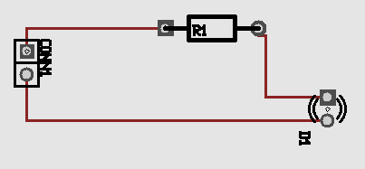

Nous allons voir comment faire de la conception électronique sous Linux. Ce que j’entends par conception électronique, c’est la conception d’un circuit depuis le schéma jusqu’au circuit imprimé (je n’aborderai pas la simulation).
Installation préliminaire
Installez gEDA et PCB depuis les dépôts. Sous une distribution de type Debian :
sudo apt-get install geda geda-utils pcb
Dans ce tutorial, le dossier de travail sera ~/electronique. Créez le dossier depuis un terminal en tapant :
mkdir ~/electronique
cd ~/electronique
Petite conf (facultatif)
Le but est de pouvoir rajouter ses propres composants (un composant est un schéma avec l’extension .sym). vous n’aurez qu’à placer vos composants dans ~/.geda/sym/
mkdir ~/.geda/sym
sudo rmdir /usr/share/gEDA/sym/local
sudo ln -s ~/.geda/sym /usr/share/gEDA/sym/local
Création du schéma
Premier schéma: l’alimentation
Créez votre schéma
gschem ~/electronique/alimentation.sch
Tracé du schéma
Insérez les composants depuis le menu Ajouter>Component…

De cette façon, ajoutez:
- connector2-1
- io-1
- io-1
Tracez les liens (menu Ajouter→Net…) pour obtenir le schéma suivant :

Propriété des éléments
Double-cliquez sur le connecteur et renseignez le champs refdes : CONN1 Chaque refdes doit être unique dans l’ensemble des schémas du projet.

Ajoutez aussi une footprint: CONNECTOR 2 1 (Double-cliquez sur l’élément et cherchez dans la liste déroulante l’attribut nommé footprint). De la même manière renommez les attributs net des IO :
- premier IO : net: BRANCHE1:1
- second IO : net: BRANCHE2:1
La propriété net d’un IO doit toujours se terminer par “:1”. Votre schéma doit ressembler à ça:

Sauvegardez votre fichier dans ~/electronique/alimentation.sch
Second schéma: la lumière
Créez un nouveau schéma en y insérant :
- resistor-2
- led-1
- io-1
- io-1
Modifiez les refdes pour qu’ils soient uniques et spécifiez les footprints:
- Résistance : footprint=R025
- Led: footprint=LED3
Renseignez aussi les nets pour que les références coïncident avec le schéma de l’alimentation:
- premier IO : net: BRANCHE1:1
- second IO : net: BRANCHE2:1

Sauvegardez le fichier dans ~/electronique/lumiere.sch
Description du projet
Ouvrez l’éditeur de texte nano via la commande suivante :
nano ~/electronique/mon_projet
Insérez le text suivant:
schematics alimentation.sch lumiere.sch
output-name mon_circuit
Enregistrez (ctrl+x →O/Y) et quittez l'éditeur de texte.
Génération du circuit
Deux fichiers vont êtres nécessaires :
- la netlist (.net) qui décrit les liens fonctionnels du circuit
- le circuit lui-même (.pcb) dans lequel nous allons gérer l”implantation des éléments
Depuis un terminal, mettez-vous dans le dossier de travail et lancez la commande gsch2pcb:
cd ~/electronique
gsch2pcb mon_projet
Trois fichiers sont créés :
- mon_circuit.net
- mon_circuit.pcb
- mon_circuit.cmd
La console indique que 3 empreintes ont bien été créées:
=====================================================
gsch2pcb backend configuration:
----------------------------------------
Variables which may be changed in gafrc:
----------------------------------------
gsch2pcb:pcb-m4-command: /usr/bin/m4
gsch2pcb:pcb-m4-dir: /usr/share/pcb/m4
gsch2pcb:pcb-m4-confdir: /etc/pcb
gsch2pcb:pcb-m4-path: /usr/share/pcb/m4 /etc/pcb $HOME/.pcb .
gsch2pcb:m4-command-line: /usr/bin/m4 -d -I/usr/share/pcb/m4 -I/etc/pcb -I$HOME/.pcb -I. /usr/share/pcb/m4/common.m4 >> - mon_circuit.pcb
---------------------------------------------------
Variables which may be changed in the project file:
---------------------------------------------------
gsch2pcb:use-m4: yes
=====================================================
Using the m4 processor for pcb footprints
----------------------------------
Done processing. Work performed:
0 file elements and 3 m4 elements added to mon_circuit.pcb.
Next step:
1. Run pcb on your file mon_circuit.pcb.
You will find all your footprints in a bundle ready for you to place
or disperse with "Select -> Disperse all elements" in PCB.
2. From within PCB, select "File -> Load netlist file" and select
mon_circuit.net to load the netlist.
3. From within PCB, enter
:ExecuteFile(mon_circuit.cmd)
to propagate the pin names of all footprints to the layout.
Implantation des éléments
Lancez PCB via la commande suivante :
pcb mon_circuit.pcb
Dispersion des éléments
Vous devriez voir tous les composants massés en haut à gauche de votre écran. Commencez par les disperser depuis le menu Sélection > Disperser tous les éléments
Repositionnez les éléments à votre guise.
Renseignement des liens fonctionnels
Chargez le fichier de netlist depuis le menu Fichier→charger le fichier de netlist. Sélectionnez mon_circuit.net. Vous n’aurez aucun changement à l’écran. Créez les liaisons depuis le menu Connects>optimiser les liaisons et vous obtiendrez (à quelques rotations près) :

Création du routing
Il nous reste à créer les routes avec de belles pistes. Créez le routing final depuis le menu Connects→Auto-route all rats. Vous pouvez réinitialiser le routing depuis le menu Connects→Rip-up all auto-routed tracks.

Et la suite …
Vous pouvez changer le nombre de couches (en spécifiant 2 pour un circuit double face) depuis le menu Fichier>Préférences…>Couches
Vous pouvez changer la largeur des pistes et l’espacement minimum entre les couches en cliquant sur le bouton style de routage en bas à gauche de l’écran
Vous pouvez rechercher toutes les footprints disponible en pressant la touche «i»; ça vous servira pour renseigner les empreintes de votre schéma électrique (*.sch)
Exportez votre typon depuis le menu Fichier>Export layout… >PS. Spécifiez une échelle 1.05 dans le champs scale vous pourrez convertir votre PS en PDF via la commande ps2pdf